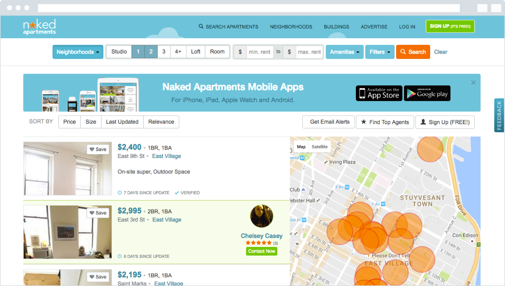
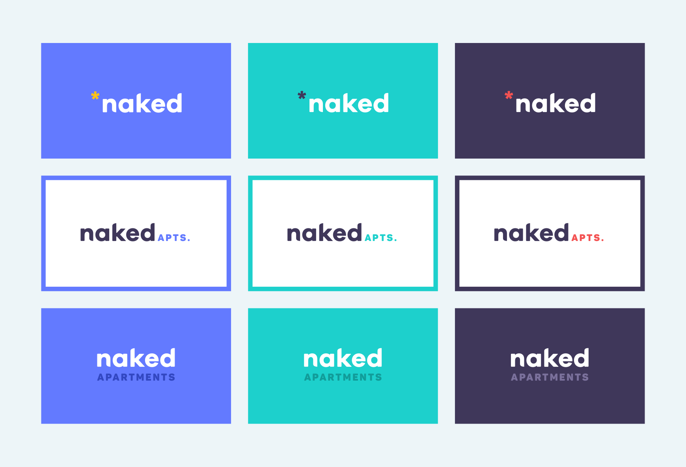

Identifying the Challenge
Naked apartments is a popular website where users can look for apartments and set up meetings with brokers. Our design team at Greenhouse decided that the brand could use an update, so we spent a day sketching and bouncing ideas off of each other, as an exercise in brand design.
"Naked Apartments is a great website that could use the brand to match.”
While the current Naked branding isn't actually too terrible, I felt like it could really benefit from a modern, "startupy" direction. For context, this is how Naked's visual design currently looks:

The aesthetic is pretty bland, and over-corporate. Naked is a pretty popular brand, and there's a great opportunity to inspire delight in all of those users.
Designing a Solution
As a design team, we decided to have everyone take a different visual direction. For example, one person focused on the "naked" aspect of the brand, building a brand around censoring certain aspects of photos. I decided to take a clean, more "startupy," vibe. I felt like it could really freshen up the brand. As a team, we created a mood-board and drew up some sketches.


After doing initial sketches, I started on some digital artwork. I tweaked a font to create some custom letterforms, and played around with a few different lockups, changing the relationship between "Naked" and "apartments." Then, I tried out a few different color options.

This was a really interesting exploration in logo creation and branding, but I think there could be a lot more work to do for Naked Apartments. Specifically, I would like to spend some time redesigning the web view, keeping the style aligned with this new brand.